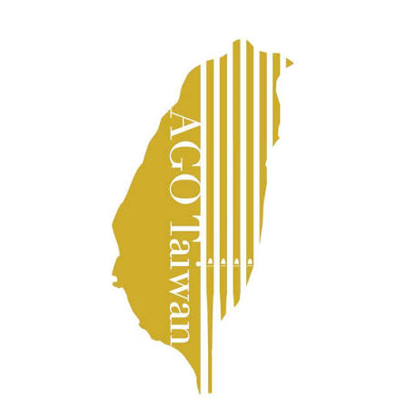
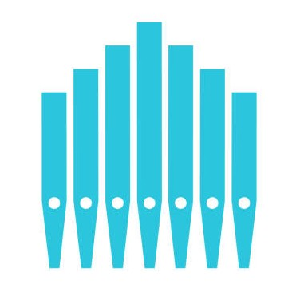

台灣管風琴協會主辦
2026管風琴體驗營音管是歐洲最古老、最巨大的樂器——「管風琴」發聲的核心寶貝！
通常每一支音管只能發出一個固定的音高。如果我們想要彈一首美妙的曲子，就需要許許多多長短不同的音管在一起工作！
🔥 驚人事實：一座超大型的管風琴，裡面可能藏著數百到數萬支音管哦！
長管子裡住著「高大」的空氣，振動得慢悠悠的，發出好聽的低音 🐘 (像大象走步)。
短管子裡住著「嬌小」的空氣，振動得非常快速，發出可愛的高音 🐥 (像小雞唱歌)。
珍珠奶茶吸管，老師已經幫大家量好尺寸，並畫上紅色剪裁線囉！
安全剪刀用來沿紅線剪開，神奇寬膠帶用來把吸管大集合固定！
不需黏土，這次我們將底端「折一下」再貼緊，就能變出超響亮的聲音！
拿起畫有紅色剪裁線的吸管，用剪刀整齊地沿著紅色標記剪下。
將每根吸管的其中一端往上摺起約 0.5 公分。
用一小段透明膠帶，將摺起的地方纏繞貼死。不能漏氣喔！
嘴唇微微嘟起，像吹熱湯一樣，發出輕輕的 "Poo" 音。
不要直往吸管裡灌氣！要把風吹向管口內壁的邊緣。
長管需要溫柔的暖氣流，短管需要快速又集中的冷氣流！
| 唱名 (Do Re Mi) | Do (1) | Re (2) | Mi (3) | Fa (4) | Sol (5) | La (6) | Ti (7) | Do' (i) |
|---|---|---|---|---|---|---|---|---|
| 吸管長度 (cm) | 16.0 | 14.2 | 12.6 | 12.0 | 10.7 | 9.5 | 8.4 | 8.0 |
把摺好的那一端（封口處）對齊在同一條水平線上。
依序由最長到最短，從左向右整齊排好。
用寬膠帶橫向把所有吸管牢牢纏繞兩圈。大功告成！
利用一截粗 PVC 水管和一個乳膠氣球，做出一個能發出「超震撼重低音」的膜鳴樂器！
1. 把氣球從中間剪開，留下上半部橡皮膜。
2. 把橡皮膜緊緊地繃在水管一端，用膠帶黏死！
3. 吹奏秘訣：嘴巴對準橡皮膜與水管交界的縫隙吹氣！
氣球皮就像我們的「聲帶」。當我們吹氣時，氣流會衝開氣球皮，讓它開始每秒幾百次地快速拍打振動！
當我們把氣球膜拉得越緊（張力大），它振動得就越快，聲音聽起來就會變尖（高音）哦！
快速抖動的氣球膜把聲音送進長長的水管，水管將低頻振動放大，就變成了像「小喇叭」一樣震撼的重低音！
負責吹奏主旋律：
《小星星》或《快樂頌》
負責在每小節第一拍：
BOOM！ ── 穩定節奏
大家準備好了嗎？跟著老師的拍子，管風琴體驗營大合奏，開始！
音管的長度越長，聲音就會變得越高還低？ 為什麼？
👉 點擊翻看答案管子越長，裡面的空氣柱也越長，空氣振動速度就變慢（頻率低），發出的聲音就越低沉哦！
摺疊封底的膠帶如果沒貼好，漏氣會怎樣？
👉 點擊翻看答案如果漏氣了，管子裡的空氣就無法好好反射形成稳定的「共振波」，聲音就會變得很小，或者吹不出聲音！
要把水管氣球笛聲音變尖，氣球膜應該拉緊還是放鬆？
👉 點擊翻看答案應該要「拉緊」！氣球膜拉得越緊，它的張力就越大，振動速度就越快（頻率變高），聲音聽起來就會變尖（高音）！
氣球皮可以換成其他的材料也能發出聲音嗎？
👉 點擊翻看答案
任何「輕薄」且「具備彈性或足夠韌性」的片狀材料都能讓聲波產生共振並發出聲音。
例如：膠帶、保鮮膜、塑膠袋。